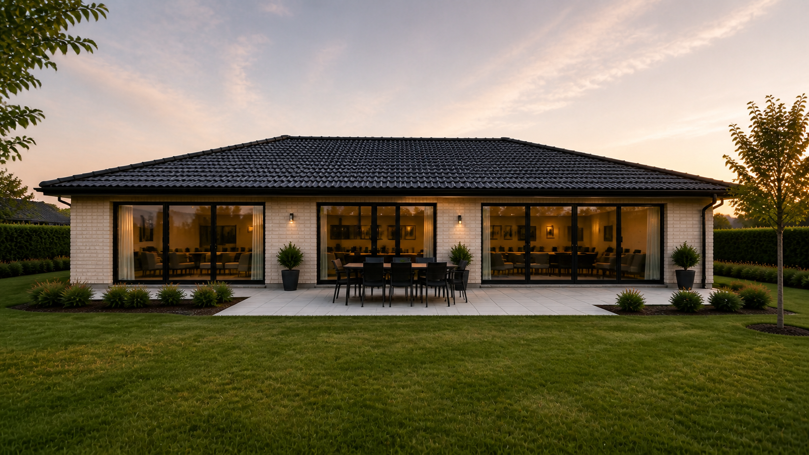
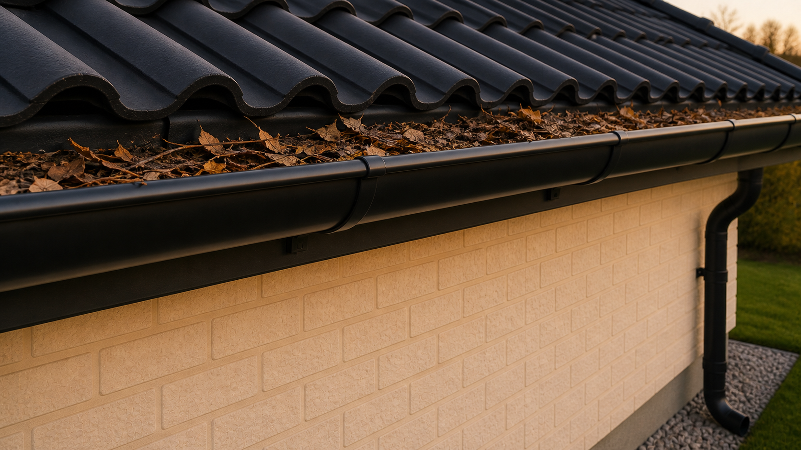
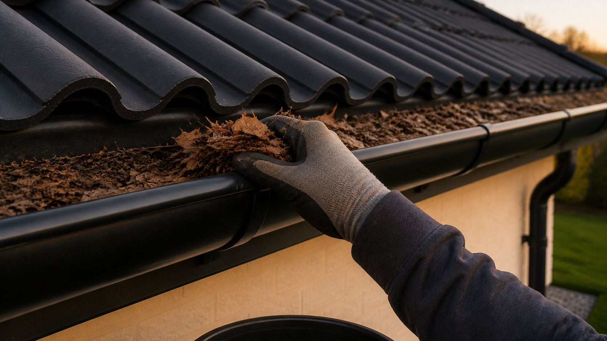
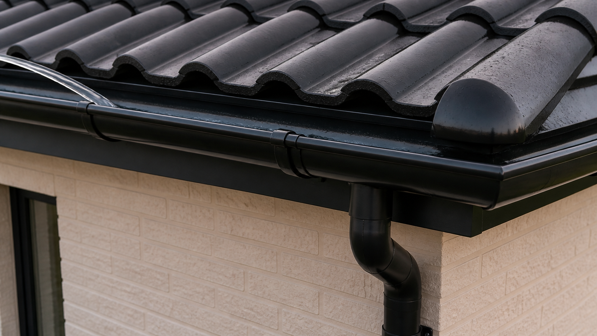
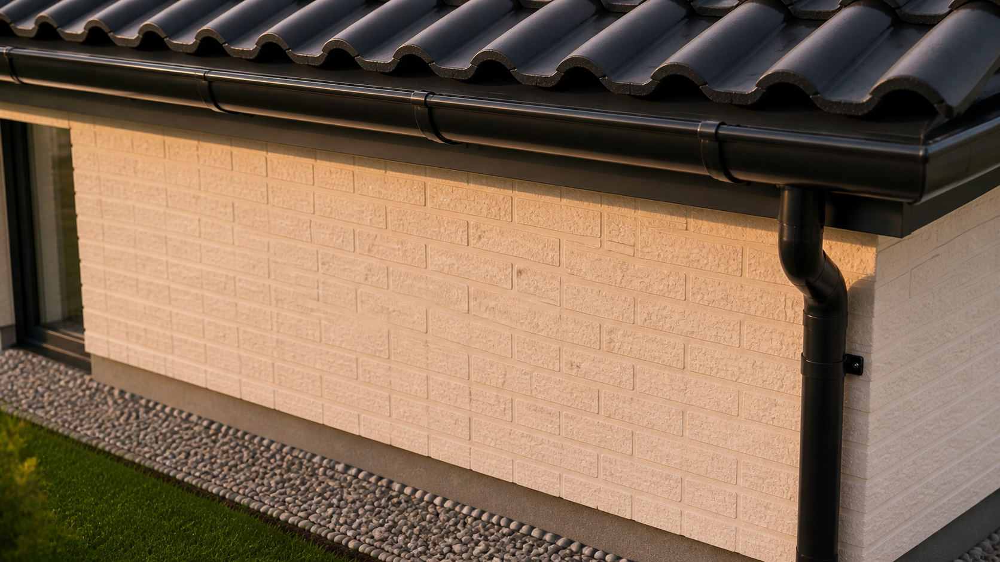

Matriva guide · pilotoutput · ikke endelig visuel standard
Rens tagrender
En sikker gennemgang af tagrender og nedløb, så regnvand kan ledes væk fra huset.

Matriva Modern 2023 · A06 pilot / superseded
Rensning af tagrender er enkel, men vigtig vedligeholdelse. Gør kun arbejdet, hvis du kan komme sikkert til fra jorden eller et stabilt arbejdssted.
TidCa. 60 min.
SværhedsgradMiddel
Bedste tidspunktForår og efterår
Hvorfor det er vigtigt
Blade, mos og snavs kan holde vand tilbage i tagrenden.
Overløb kan belaste facade, sokkel og arealer tæt ved huset.
En visuel kontrol kan opdage løse beslag og utætte samlinger tidligt.
Sikkerhed førstArbejd ikke på våd, glat eller ustabil stige. Stop, hvis adgangsforhold, højden eller taget føles usikre.
Værktøj og forberedelse
Arbejdshandsker · stabil stige eller andet sikkert arbejdsudstyr · lille spand eller pose · haveslange, hvis skylning kan udføres sikkert. Vælg tørt vejr og gode lysforhold.
Trin for trin
1. Fjern blade og snavs
Fjern løst materiale lidt ad gangen. Skub det ikke mod nedløbet.

1Blade og snavs Læg materialet i en spand eller pose i stedet for at flytte blokeringen.
2. Rens arbejdsområdet
Brug handsker og arbejd roligt fra et stabilt arbejdssted.

3. Skyl og kontrollér vandets vej
Skyl forsigtigt mod nedløbet, hvis du kan gøre det uden at miste balancen eller sprøjte vand ind mod huset.

2Kontrollér faldet Vandet skal bevæge sig mod nedløbet uden at stå stille.
3Kontrollér samlingen Se efter synlige dryp efter skylning.
4Tjek nedløbet Vandet skal fortsætte frit uden tydelige blokeringer.
4. Kontrollér resultatet
Renden virker stabil, og vandet har en synlig vej mod nedløbet.

Færdig?
Tagrende og nedløb er fri for synligt løst materiale. Vandet bevæger sig mod nedløbet uden at løbe over, og der er ingen tydelige løse beslag, revner eller utætte samlinger.
Hvornår bør du få hjælp?
Kontakt en fagperson, hvis du ser skader på tag eller fastgørelser, tilbagevendende blokeringer eller vand, der bliver stående, selv om renden er renset.